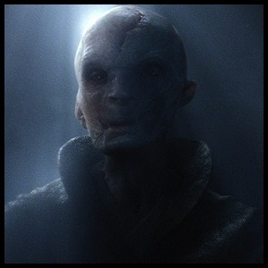
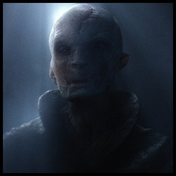

What we know so far...
Luke Skywalker begins training Rey on the planet Ahch-To as Finn recovers from his grevious wounds at the hands of Kylo Ren.
General Hux and the wounded Ren return to the mysterious homeworld of Supreme Leader Snoke to begin Kylo's dark side training in earnest.
Princess Leia, gravely wounded in a surprise attack, is forced to surrender power to a formidable female officer in the new Resistance, causing a fracture in the struggling army
between those loyal to Leia, now led by Poe Dameron,
and those led by the Resistance Officer, portrayed by Laura Dern.
 
